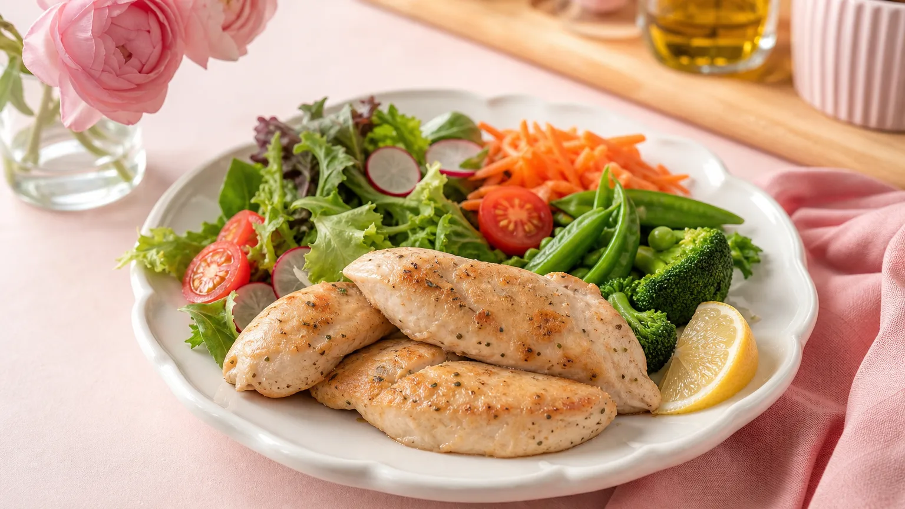

「ダイエット中でもお腹いっぱい食べたい」「毎日の献立に悩む」——そんな女性にぴったりなのがささみレシピです。
ささみは100gあたり約105kcal・たんぱく質約23gと、鶏肉の中でも特に低カロリー・高たんぱく。満腹感を保ちながら食事管理ができる、ダイエットの強い味方です。
この記事では調理法別に7つのレシピを、1食あたりのカロリー目安とともに紹介します。
ささみがダイエットに向いている3つの理由
① カロリーが低くたんぱく質が豊富
ささみ1本（約60g）のカロリーは約63kcal。同量の豚バラ肉（約220kcal）と比べると約3分の1以下です。たんぱく質は筋肉の維持をサポートし、基礎代謝を落とさない食事管理に役立ちます。
② 脂質がほぼゼロ
ささみの脂質は100gあたり約0.8g。揚げ物や炒め物に使う油を最小限にすれば、1食の脂質を大幅に抑えられます。
③ 調理のアレンジが豊富
茹でる・蒸す・焼く・電子レンジ加熱と、加熱方法が多彩。サラダ・スープ・丼・和え物など、飽きずに続けられます。
🍗 ささみ vs 他の肉｜100gあたり栄養比較
低カロリー・高たんぱくがひと目でわかる！
| 食材 | カロリー | たんぱく質 | 脂質 |
|---|---|---|---|
| 🏆 ささみ 最優秀 | 105kcal | 23g | 0.8g |
| 鶏むね肉 優秀 | 116kcal | 22g | 1.9g |
| 鶏もも肉（皮なし） | 127kcal | 19g | 5g |
| 豚ロース（脂身なし） | 150kcal | 22g | 5.6g |
| 豚バラ肉 | 366kcal | 14g | 35g |
※文部科学省「日本食品標準成分表2020年版」をもとに作成。数値は目安です。
調理法別｜ささみダイエットレシピ7選
【茹でる】① ささみのバンバンジーサラダ（約180kcal）
材料（1人分）：ささみ2本・きゅうり1本・トマト1/2個・ごまだれ（市販）大さじ1
作り方（3ステップ）
- ささみを沸騰したお湯に入れ、弱火で8分茹でて粗熱を取る。
- きゅうりとトマトを細切り・くし切りにして皿に盛る。
- ささみを手でほぐしてのせ、ごまだれをかければ完成。
たんぱく質約28g・脂質約5g。野菜と組み合わせることで食物繊維も補えます。
【電子レンジ】② ささみのレンジ蒸し梅しそ和え（約130kcal）
材料（1人分）：ささみ2本・梅干し1個・大葉3枚・ポン酢小さじ2
作り方（3ステップ）
- ささみに酒小さじ1をふり、ラップをして電子レンジ600Wで3分加熱。
- 粗熱が取れたらほぐし、梅干しの果肉・刻んだ大葉と混ぜる。
- ポン酢で味を整えて完成。
梅のクエン酸が食後の疲労感をやわらげる効果が期待できます。調理時間は約10分。
【焼く】③ ささみのハーブソテー（約160kcal）
材料（1人分）：ささみ2本・塩こしょう少々・乾燥バジル小さじ1/2・オリーブオイル小さじ1
作り方（3ステップ）
- ささみを観音開きにして塩こしょう・バジルをまぶす。
- フライパンにオリーブオイルを熱し、中火で片面3分ずつ焼く。
- レモンを絞ってさっぱり仕上げに。
観音開きにすると火が均一に通り、パサつきを防げます。
【スープ】④ ささみと豆腐のふんわりスープ（約120kcal）
材料（1人分）：ささみ1本・絹豆腐150g・水300ml・鶏がらスープの素小さじ1・塩こしょう少々・小ねぎ適量
作り方（3ステップ）
- 鍋に水とスープの素を入れて沸かし、ささみを入れて5分煮る。
- ささみを取り出してほぐし、豆腐をスプーンで崩しながら鍋に戻す。
- 塩こしょうで調味し、小ねぎを散らして完成。
汁物は満腹感が出やすく、食べ過ぎ防止に役立ちます。寒い季節の夜ごはんにもおすすめです。
【丼】⑤ ささみの照り焼き丼（約380kcal）
材料（1人分）：ささみ2本・ご飯150g・醤油小さじ2・みりん小さじ2・砂糖小さじ1・サラダ油小さじ1
作り方（3ステップ）
- ささみを観音開きにし、フライパンで両面を焼く。
- 醤油・みりん・砂糖を合わせたタレを加え、絡めながら1分煮詰める。
- ご飯の上にのせ、千切りキャベツを添えて完成。
ご飯は150g（約252kcal）に抑えることで、丼でも380kcal台に収まります。
【和え物】⑥ ささみとほうれん草のごま和え（約150kcal）
材料（1人分）：ささみ1本・ほうれん草100g・すりごま大さじ1・醤油小さじ1・砂糖小さじ1/2
作り方（3ステップ）
- ささみをレンジで加熱してほぐす。ほうれん草は茹でて3cm幅に切る。
- すりごま・醤油・砂糖を混ぜ合わせてタレを作る。
- ささみとほうれん草をタレで和えて完成。
ほうれん草の鉄分とたんぱく質を同時に摂れる、栄養バランスの良い副菜です。
【作り置き】⑦ ささみのしっとりサラダチキン（約110kcal）
材料（2〜3食分）：ささみ4本・塩小さじ1/2・砂糖小さじ1/2・酒大さじ1
作り方（3ステップ）
- ささみに塩・砂糖をまぶし、30分置く。
- 耐熱袋に入れて酒を加え、空気を抜いて閉じる。
- 70℃のお湯に30分浸けて完成。冷蔵庫で3日間保存可能。
まとめて作っておけば、忙しい平日の献立に大活躍します。サラダ・丼・スープにアレンジ自在です。
1週間分の献立に組み込みたい方は、ダイエットレシピ1週間の朝昼晩プランも参考にしてみてください。
ささみレシピをダイエットに活かす3つのポイント
ポイント1：1日の目安は2〜3本（120〜180g）
ささみ1本は約60g。1食あたり2本を目安にすると、たんぱく質を約28g摂れます。過剰摂取は腎臓への負担になる場合もあるため、1日3本程度を目安にするのがおすすめです。
ポイント2：パサつきを防ぐ下処理を忘れずに
ささみがパサつく主な原因は「高温で長く加熱すること」です。茹でる場合は沸騰後に火を止めて余熱で火を通す、レンジ加熱は600Wで3分を目安にするなど、低温・短時間を意識しましょう。
ポイント3：野菜・発酵食品と組み合わせる
ささみ単体では食物繊維やビタミンが不足しがちです。きゅうり・トマト・ほうれん草などの野菜や、キムチ・ヨーグルトなどの発酵食品と組み合わせることで、栄養バランスが整います。
食事管理全体を見直したい方は、ダイエット献立1週間プランもあわせてチェックしてみてください。
よくある質問
Q. ささみは毎日食べても大丈夫ですか？
毎日食べること自体は問題ありませんが、同じ食材だけに偏ると栄養が偏る場合があります。1日2〜3本を目安にしつつ、豆腐・卵・魚など他のたんぱく源もローテーションで取り入れると、バランスの良い食事管理が続けやすくなります。
Q. ささみと鶏むね肉はどちらがダイエット向きですか？
カロリー・脂質ともにささみの方がわずかに低く、ダイエット向きといえます（ささみ：105kcal・脂質0.8g、鶏むね肉：116kcal・脂質1.9g／100gあたり）。ただし差は小さいため、調理のしやすさや好みで選んでも問題ありません。どちらも高たんぱく・低カロリーな優秀食材です。
Q. ダイエット中、ささみはいつ食べると効果的ですか？
特定の時間に食べると効果が上がるという科学的根拠はありませんが、夕食に取り入れると1日のたんぱく質不足を補いやすくなります。また、運動後30〜60分以内にたんぱく質を摂ることで、筋肉の維持をサポートしやすいとされています。
まとめ：ささみレシピで無理なく食事管理を続けよう
ささみは100gあたり105kcal・たんぱく質23g・脂質0.8gと、ダイエット中の食事管理に取り入れやすい食材です。
今回紹介した7レシピのポイントをまとめます。
- 茹でる・蒸す・焼く・スープと調理法を変えて飽きない工夫を
- 1食あたり2本（約120g）を目安に
- 野菜・発酵食品と組み合わせて栄養バランスを整える
- 作り置きサラダチキンで平日の時短にも対応
まずは今日の夕食に1品、ささみレシピを試してみてください。食事管理の記事をもっと読みたい方は食事管理の記事一覧もご覧ください。